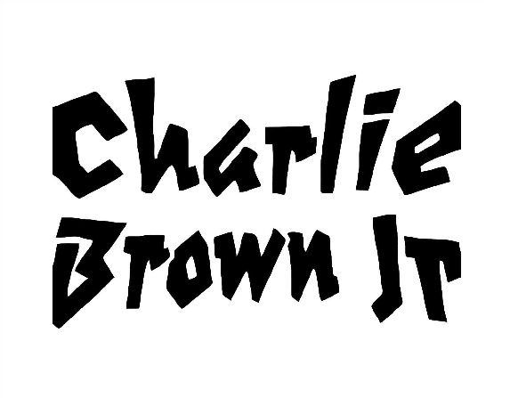

Fotos


Confira alguns álbuns da banda.
"A vida é feita de desafios e se o amanhã não existir, eu vou viver tudo hoje!"
"Se o mundo é mesmo parecido com o que vejo, prefiro acreditar no mundo do meu jeito!"